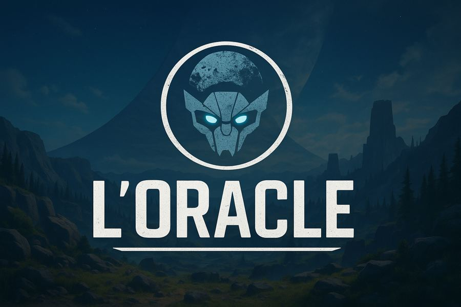

L'Oracle place le joueur dans un univers de survie futuriste, aux confins d'un monde hostile.
Le concept est encore en phase d'exploration : l'ambiance et le cadre sont posés, les systèmes de jeu restent à affiner.
3D · Survie · Unreal Engine
Survivre dans un futur qui ne pardonne rien.

L'Oracle place le joueur dans un univers de survie futuriste, aux confins d'un monde hostile.
Le concept est encore en phase d'exploration : l'ambiance et le cadre sont posés, les systèmes de jeu restent à affiner.